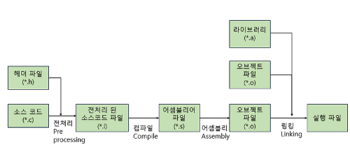

C/C++에 빌드 과정을 요약하면 컴파일러가 소스를 기계어로 바꾸고 링커가 라이브러리를 링크하여 빌드 되는 구조
빌드 파일들에 의미
정적 라이브러리 파일 (.lib, .a)
리눅스: .a윈도우: .lib
동적 라이브러리 파일 (.so, .dll)
리눅스: .a윈도우: .dll
오브젝트 파일 (.o, .obj)
링킹이 되지 않은 원시 바이너리 파일
라이브러리를 만들 때 사용
리눅스: .o윈도우: .obj
Libtool Archive (.la)
동적/정적 라이브러리가 관리되는 메타데이터
라이브러리가 또 다른 라이브러리를 참조 할 수 있으므로 이럴 때 사용됨
dlname='libtest.so'
library_names='libtest.so libtest.so.1 libtest.so.1.0'
old_library='libtest.a'
dependency_libs='-lm -lpthread'
installed=yes
library_names: 여러 라이브러리 버전에 대한 심볼지정dependency_libs: 의존 라이브러리old_library: 동적 라이브러리가 없는 경우 정적 라이브러리에 대한 심볼도 지정
libtool은 해당 .la 파일을 참조하여 종속된 라이브러리를 포함하여 해당 라이브러리를 설치 (시스템 표준 라이브러리 경로(/usr/lib 등)에 복사) 하여 라이브러리를 사용할 수 있게 해준다
즉 컴파일과 관련된 파일은 아님!!!
Export File (.exp)
MSVC만 해당
DLL을 빌드할때 생성되는 심볼 정보 어떤 함수가 외부에 공게 되어있는지 정보등을 담고있다
해더 파일 (.h)
프로그램에 공통적으로 사용되는 선언을 하는 파일
쉽게말해 C/C++에 인터페이스 역할 이다
기존 다른언어들에 인터페이스와 마찬가지로 코드에 유지보수나 이런것들에 이점으로 인해 많이 사용된다
C언어에 특성상 구조체 선언과 메크로 상수등에 많은 의존을 할텐데 이걸 효과적으로 관리하기 위해서 해더 파일이 있는것이다.
사용되는 모든 함수는 전부 하나의 해더파일에 모아두고 구현은 사용용도에 맞게 각각 나눠서 구현 한다
인터페이스 (math.h)
int add(int a, int b);구현 (cul.c)
int add(int a, int b) {
return a + b;
}메인 프로그램 (main.c)
#include <stdio.h>
#include "math.h"
int main(int argc, char const *argv[]) {
printf("%d", add(1, 2));
return 0;
}빌드 (gcc)
gcc -o main.exe main.c math.h cul.c몇 가지 참고 사항들
- 해더 파일에 직접적으로 함수 구현을 만들어도 작동을 하긴 한다
- 다만 표준에 어긋나고 그러라고 만든 해더파일이 아니므로 그따구로 쓰지 말자
- 간단한 프로그램은 굳이 해더파일쓸 필요는 없다
- 해더파일로 파일을 분리하면 컴파일 진행할 때 종속파일들을 모두 명시해야 되서 그냥
.c파일로 만들어서 include 하면 컴파일할때 컴파일러가 알아서 종속성을 찾기 때문에 이때는 그냥.c파일 만 쓰자
- 해더파일로 파일을 분리하면 컴파일 진행할 때 종속파일들을 모두 명시해야 되서 그냥
- 아래 나올 라이브러리는 해더파일을 기반하여 생성/링크 된다
라이브러리를 포함한 빌드 방법
라이브러리는 해더파일(인터페이스)에 구현체를 라이브러리로 묶고 해더파일만 노출 시켜서
라이브러리를 사용하는 프로그램은 노출된 해더파일만 include 하여 사용함
내가 사용하고 싶은 라이브러리를 다운 받고 include에 있는 해더파일이 뭔지 알면 그 해더파일을 include해서 사용하면 됨
해더에대한 심볼은 컴파일러가 담당하고, 라이브러리에 대한 심볼은 링커가 담당함
그래서 폴더 구조는 보통 아래와 같음
📦프로젝트
┣ 📂src
┃┗ 📜test.c
┣ 📂include
┃┗ 📜test.h
┣ 📂lib
┃┗ 📜libtest.a
┣ 📂bin
┃┗ 📜main.exe
main.c
#include <test.h>
void main() {
libtest에구현된함수();
}참고로 해더파일이 include에 존재하는 경우 <>로 include 가능함
정적 라이브러리
리눅스:
.a,.la윈도우 (msvc):lib
실행파일에 직접 라이브러리를 포함하여 빌드되는 방식
실행파일 하나만 존재하면 되니 사용자 입장에서 딱히 의존성 문제없이 사용할 수 있음
컴파일 & 링크시에 라이브러리, 해더파일이 필요하지만
실행 시에는 그 어떤것도 필요하지 않음
GCC
-
오브젝트 파일생성
gcc -c libtest.c -o libtest.o -
정적 라이브러리 생성 (.a)
라이브러리 이름은 무조건lib로 시작해야함ar rcs libtest.a libtest.o 같이포함할것들... -
라이브러리 링크 (실행파일 만들기)
-I: 해더파일 폴더,-L: 라이브러리 폴더,-l: 라이브러리 이름
(앞에 lib 접두어 제외)gcc 소스.c -I./include -L./lib -ltest -o 소스.exe
MSVC
-
오브젝트 파일 생성 (.obj)
cl /c test.c /Fo:test.obj -
정적 라이브러리 생성 (.lib)
lib /out:test.lib test.obj 같이포함할것들... -
라이브러리 링크 (실행파일 생성)
/I: 해더파일 폴더,/link: 링커옵션 지정,/LIBPATH: 라이브러리 폴더,test.lib: 라이브러리 파일cl /I include 소스.c /link /LIBPATH:lib test.lib
동적 라이브러리 (공유 라이브러리)
리눅스
.so, 윈도우 (msvc):dll
라이브러리를 따로 파일로 빼서 필요할 때 마다 링크하는 방식
실행파일에 용량과 실행시간을 줄일 수 있으나, 라이브러리가 누락 될 수 있음
컴파일 & 링크시에 라이브러리+해더파일이 필요하고
실행 시 에는 라이브러리 파일 만 필요하며
라이브러리 파일은 지정된 위치에 존재 해야 한다
GCC
-
동적 라이브러리 생성 (.so)
라이브러리 이름은 무조건lib로 시작해야함
참고로 mingw 환경에서는.lib로 바꿔주면 윈도우용으로도 가능함gcc -shared -o ./lib/libtest.so libtest.c -
라이브러리 링크 (실행파일 만들기)
-I: 해더파일 폴더,-L: 라이브러리 폴더,-l: 라이브러리 이름
(앞에 lib 접두어 제외)gcc 소스.c -I./include -L./lib -ltest -o 소스.exe -
실행
LD_LIBRARY_PATH환경변수에 관해서는 아래OS별 기본 동적 라이브러리 심볼참고LD_LIBRARY_PATH=./lib:$LD_LIBRARY_PATH ./소스.exe
MSVC
컴파일 전 해더파일에 DLL 심볼을 넣어야함
#ifdef CREATEDLL_EXPORTS
#define CUL_API __declspec(dllexport)
#else
#define CUL_API __declspec(dllimport)
#endif
CUL_API void a();
CUL_API void b();
CUL_API void c();CUL_API 이 부분만 자유롭게 수정하고 모든 함수 정의할때 앞에 CUL_API 붙어서 하면 됨
-
동적 라이브러리 생성 (.dll)
그럼dll,exp,lib파일이 생길꺼임cl /LD test.c /Fe"lib/test.dll" -
동적 라이브러리 링크
여기서 재미있는 점은lib를 링크 하는 거임 정적 라이브러리인lib가dll을 로드하는 방식으로 돌아가게 됨cl /I include 소스.c /link /LIBPATH:lib libcul.lib -
실행
- 생성된 exe 파일과 dll을 동일한 디랙토리에 놓고 실행
(또는 아래 기본 동적 라이브러리 심볼에 있는 위치에 dll 복사)
- 생성된 exe 파일과 dll을 동일한 디랙토리에 놓고 실행
OS별 기본 라이브러리 경로
라이브러리 (dll, so)
동적 라이브러리를 사용하여 컴파일 된 실행파일은 해당 위치에 dll, so 파일이 존재 해야 함
빌드 과정시 해당 위치에 존재하는 라이브러리들은 -L 옵션 등으로 라이브러리 경로를 지정할 필요가 없음
리눅스
- 실행파일과 동일한 디랙토리
/lib//usr/lib//usr/local/lib/LD_LIBRARY_PATH환경변수에 지정된 디렉토리
윈도우
- exe파일과 동일한 위치
C:\Windows\System32: 32비트 DLLC:\Windows\SysWOW64: 64비트 DLLPATH환경변수에 지정된 디렉토리
해더 파일 (.h)
해당 위치에 존재하는 해더파일은 모든 c/c++ 파일에서 전역적으로 쓸 수 있으며
기본 해더파일 (stdio.h 같은거)를 제외하면 모두 컴파일 시 해더파일과 대응되는 동적/정적 라이브러리를 링크 해야 됨
빌드 과정시 해당 위치에 존재하는 해더 파일들은 -I 옵션 등으로 해더파일 경로를 지정할 필요가 없음
리눅스
/usr/include/usr/local/include/
윈도우
윈도우는 기본적으로 기본 해더파일 경로가 없음
에초에 리눅스와는 다르게 기본적으로 해더파일 자체가 존재하지 않음
Visual Studio 설치 시 Windows SDK에 포함되거나
Mingw로 gcc 설치 시 포함되서옴
- Windows SDK
C:\Program Files\Microsoft Visual Studio\{버전}\VC\Tools\MSVC\{버전}\includeC:\Program Files\Windows Kits\10\Include\{버전}\um\C:\Program Files\Windows Kits\10\Include\{버전}\ucrt\C:\Program Files\Windows Kits\10\Include\{버전}\shared\
- Mingw
C:\MinGW\include\C:\mingw-w64\mingw64\include\C:\MinGW\x86_64-w64-mingw32\include\
참고
리눅스에서는 apt등으로 라이브러리를 설치하는 경우가 있는데 설치하면
/usr/lib에 라이브러리가 들어가고, /usr/include에 해더파일이 들어가고, /usr/bin에 실행파일이 들어가서 실행되는 구조임
크로스 플렛폼 라이브러리
원래는 리눅스에서 컴파일 된 라이브러리를 윈도우가 쓰거나 하는게 불가능하다
다만 어느정도 호환되게 만들어 놓은 것이 Mingw GCC 와, MSYS2이다.
해당 라이브러리가 MSYS2환경과 호환성을 지닌다면 윈도우에서는 해당 라이브르러리를 Mingw를 사용해서 컴파일 가능하다
GCC 빌드 과정

전처리 (.i):Define및include파일 가공
컴파일 (.s):- 소스코드를 어셈블리로 변환
오브젝트 파일 생성 (.o):- 어셈블러로 소스코드를 기계어로 컴파일
- 이때 라이브러리가 포함된 상태는 아니므로 실행하면 오류남
링킹:- 최종적으로 라이브러리를 링크하여 실행파일을 만듬
명령어
전처리
gcc -E <소스>.c -o <출력>.i컴파일
gcc -S <소스>.i -o <출력>.s오브젝트 파일
gcc -c <소스>.s -o <출력>.o링킹
gcc main.o -o main.exe컴파일러 옵션
cflags: 컴파일러 옵션 (해더파일 링크)ldflags: 링커 옵션 (라이브러리 링크)
GCC
인코딩 옵션
-fexec-charset=<인코딩>: stdout에 인코딩을 설정
MSVC
컴파일러: https://learn.microsoft.com/ko-kr/cpp/build/reference/compiler-options-listed-alphabetically?view=msvc-170링커: https://learn.microsoft.com/ko-kr/cpp/build/reference/linker-options?view=msvc-170
인코딩 옵션
/source-charset:<인코딩>: 파일을 어떤 인코딩으로 해석할지를 결정/execution-charset:<인코딩>: stdout을 해당 인코딩으로 설정하여 출력